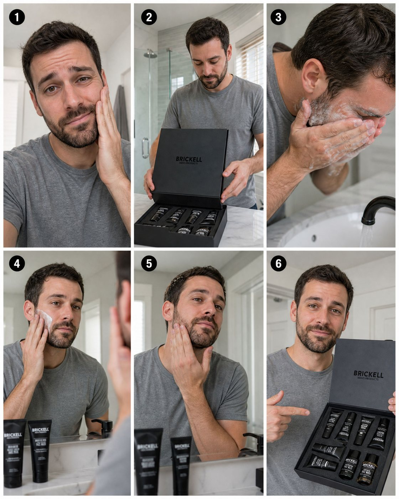
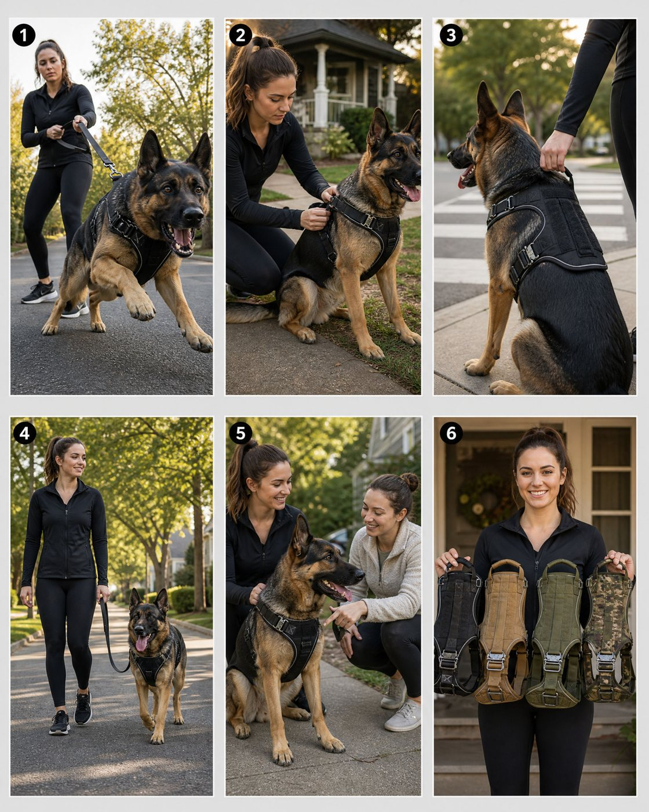
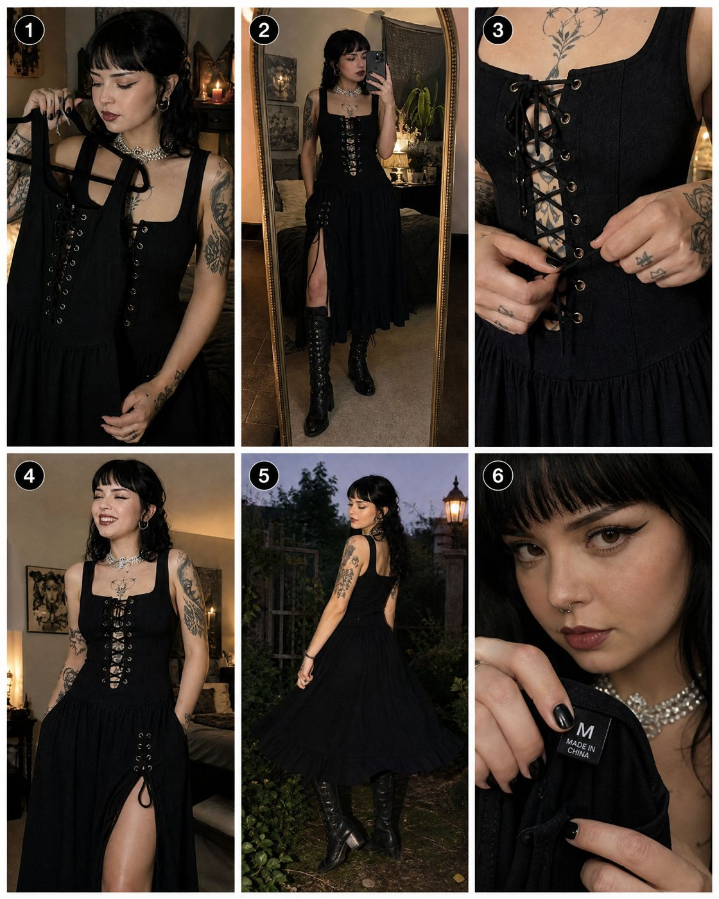
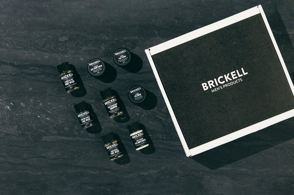
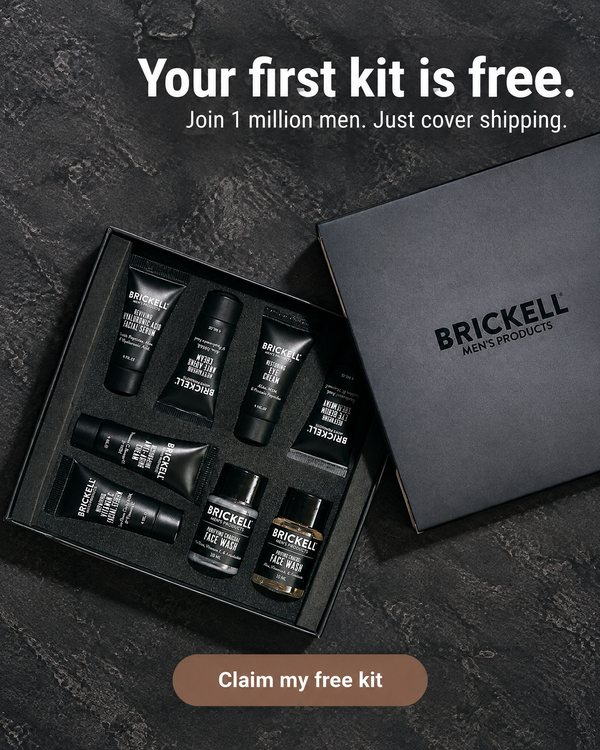
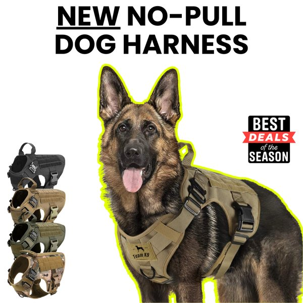
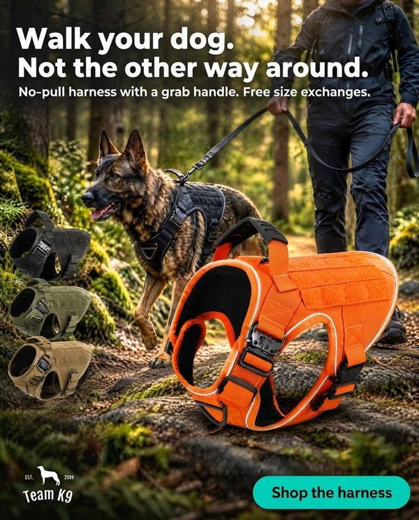
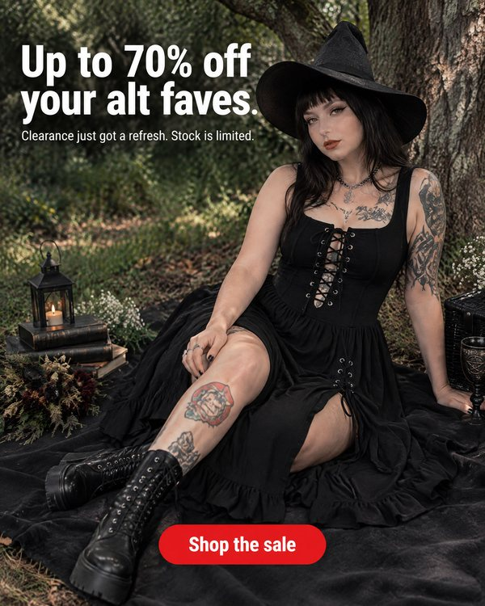
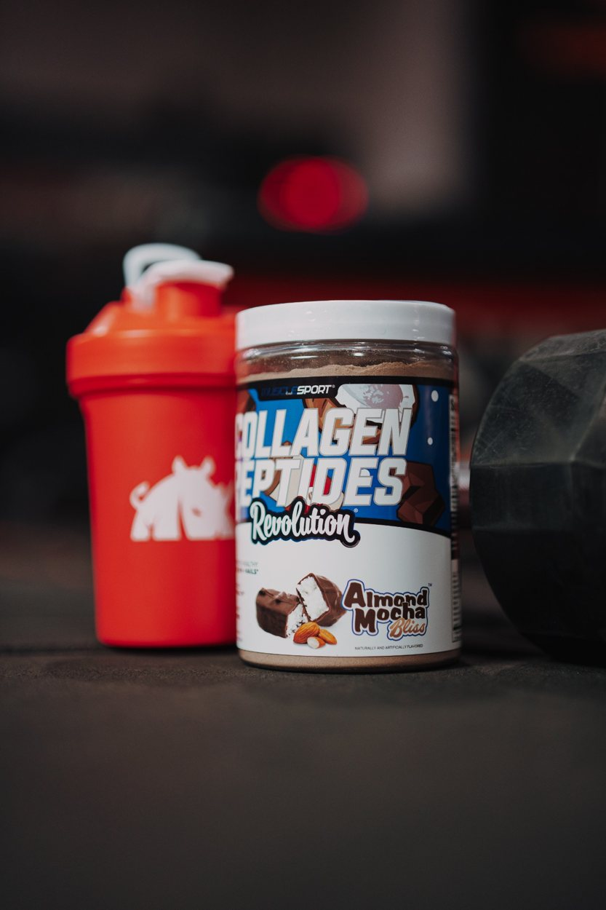
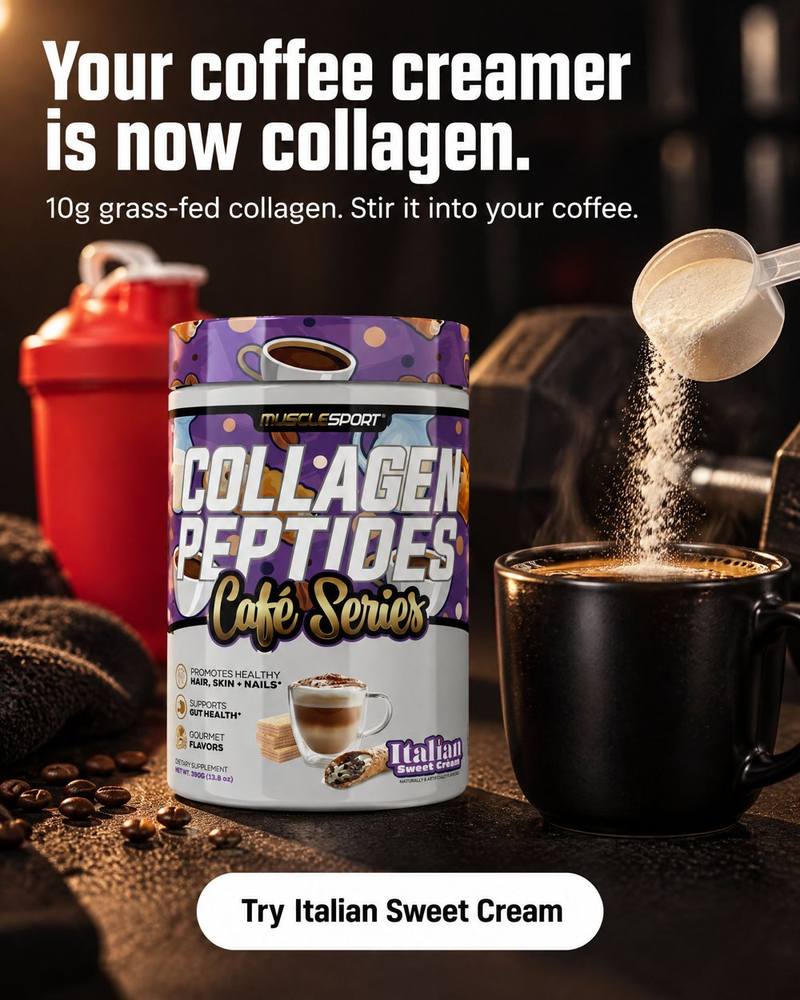

Every email hands the store something made for them: a better version of an ad they're running, a winning ad from their category cloned around their product, a ready prompt, a script. Each one opens the exact Ad Studio screen with that work already loaded.
guidelines, referenceAdUrl, t (format), ad, category and bfcm from the URL. I tested them: the prompt and their own ad arrive filled in. One gap: static ads need a product id, so the prefill is lost for people with no product saved yet (product ask #1).| Piece | Where | Status |
|---|---|---|
| Jobs, queue, data | Cloudflare Worker adstudio-drops + D1 + Queues + R2 | to build |
| Link router | Cloudflare Pages adstudio-go + KV | live |
| Dashboard | Cloudflare Pages, Google login | to build |
| New stores + owner contact | Omni API key: Brevo store connections, PushOwl installs, owner email, name, country (sets the email language) | tested replaces Intercom |
| Who already has Ad Studio | PostHog, Ad Studio's own analytics. Omni has no Ad Studio users (checked). | tested only job left for PostHog |
| Live ads | treg Meta Ad Library | tested |
| Images (variants, storyboards) | Ad Studio API first, then Replicate, then fal, then treg | Ad Studio key works but its account (farooq.chisty@brevo.com) has 0 credits · Replicate works · fal needs a key |
| Copy + image QA | AI model via OpenRouter | key in use elsewhere |
| Sending | Brevo CRM key from the Worker, Mon + Thu | tested from a Worker |
| Category winners | Ad Radar data (needs an Ad Studio session) or the Ad Studio API | open |
Where this section and older sections disagree, this one wins. No human review, no reply asks, nothing pauses on a reply.
The test: read it out loud. If you wouldn't say it to a founder on a call, it goes.
Banned (the lint blocks these): one thing stood out, here's, what changed, proven winner, decent signal, worth a look, tends to work, game changer, unlock, elevate, seamless, dive, leverage, let me know, I hope, feel free, reply, last one, em dashes, semicolons, exclamation marks, more than one emoji, sentences over 26 words.
| When | What's made for them | |
|---|---|---|
| Mon, week 1 | Your ad, remade | Variant of their longest-running ad, before/after |
| Thu, week 1 | Winners you can clone | 3 ads in their category live 300+ days, one-tap clone |
| Mon, week 2 | Your video, storyboarded | 6-shot storyboard (one image) + full script, loaded into Multi-shot story |
| Thu, week 2 | Seasonal set | BFCM until 28 Nov, then the next moment on the calendar |
| Mon, week 3 | Read like a media buyer | Strategy on their live ads: 3 findings, 3 moves |
| Thu, week 3 onwards | Drops | Rotates the new types below plus triggers (new ad, winner stopped, new product, sale on site) |
Deliverability guard (automatic, not human): anyone with zero opens after 8 sends drops to Mondays only. Opens or clicks put them back on Mon + Thu.
All six shots come out of one generation in Ad Studio's Generate page (5 credits), not six. The product photo is the reference, so the packaging stays true in every panel.
One storyboard sheet for a 15 second vertical UGC video ad. Layout: a 3 by 2 grid of six equal vertical 9:16 photo panels, thin white gutters, light grey background. A small black circle with a white number 1 to 6 in the top left of each panel. No other text. The same [presenter: age, look, wardrobe] in every panel, in [setting, light]. The product is exactly the product in the reference image, labels readable, same packaging in every panel. Panel 1: [hook shot]. Panel 2: [product reveal]. Panel 3: [use, close-up]. Panel 4: [proof or feature]. Panel 5: [payoff, social moment]. Panel 6: [product to camera, call to action]. Photorealistic, shot on a phone, natural UGC look, one color grade across all panels.



| Type | What we make | Feature | Cost |
|---|---|---|---|
| Read like a media buyer (built, email 5) | 3 findings on their live ads (repetition, staleness, fake urgency, CTA sameness) and 3 moves for this week | Ad Library data + Ad Radar | $0.002 |
| Ad idea, drawn out | One infographic image: a new ad concept for their product, why it works, the 3 clicks to make it in Ad Studio. The button opens it pre-filled. | Generate (one image) | 5 credits |
| 6 angles, one product | One image with 6 mock ads for their bestseller (showcase, lifestyle, testimonial, sale, comparison, how-to). They pick one, it opens with that angle. | Generate + Ads Maker angles | 5 credits |
| Template drop | Their product in an Ad Studio template (product drop, dolly shot, stop motion), first frames as one image, clone button | Templates | 5 credits |
| Your static, moving | Their best static turned into a short video with Generate's image-to-video, first frame in the email | Generate video / Animate static ads | video credits |
adstudio-go.pages.dev/g. It checks the recipient's token: known Ad Studio account goes straight to the deep link, everyone else to sign-up carrying the link./signup and /login should jump straight to next.| Send | Store | Subject | Template | HTML |
|---|---|---|---|---|
| Mon, week 1 | Brickell Men's Products | 🎁 i remade your free kit ad | #59222 | view |
| Thu, week 1 | Brickell Men's Products | 3 beauty ads you can steal today 👀 | #59223 | view |
| Mon, week 2 | Brickell Men's Products | josh, your kit video is storyboarded 🎬 | #59224 | view |
| Thu, week 2 | Brickell Men's Products | your 4 black friday ads are drafted 🛍️ | #59225 | view |
| Mon, week 3 | Brickell Men's Products | 📊 24 of your 30 ads say the same thing | #59226 | view |
| Mon, week 1 | Team K9 | 🐕 i remade your harness ad | #59227 | view |
| Thu, week 1 | Team K9 | the harness ad that has run 620 days 👀 | #59228 | view |
| Mon, week 2 | Team K9 | michael, your harness video is storyboarded 🎬 | #59229 | view |
| Thu, week 2 | Team K9 | your 2025 black friday ads are still live 😬 | #59230 | view |
| Mon, week 3 | Team K9 | 📊 15 of your ads say "offer ends soon" | #59231 | view |
| Mon, week 1 | Beserk | 🖤 i put your 70% off on the photo | #59232 | view |
| Thu, week 1 | Beserk | 3 apparel ads you can clone today 👀 | #59233 | view |
| Mon, week 2 | Beserk | fleur, the dollhouse video is storyboarded 🎬 | #59234 | view |
| Thu, week 2 | Beserk | your 4 black friday ads are drafted 🖤 | #59235 | view |
| Mon, week 3 | Beserk | 📊 16 new ads in 30 days. now this | #59236 | view |
| Finding | What we do |
|---|---|
Signed-out visitors lose every parameter. Any deep link redirects to /login and drops the query. Nothing is saved in storage or cookies. | Every link for non-users is ads.brevo.com/signup?next=<deep link>. The sign-up page puts next into the Google sign-in state and onto its "Sign in" link. Not yet verified end to end, because it needs a brand-new account. |
Static links without a product id dropped the prompt (step=settings). | Use step=product. It opens "Static ad from a reference" at the product step with "Paste a link". Tested: the prompt and their ad survive the paste and arrive at settings. |
| BFCM state lives in the URL. | bfcm={"fields":{"bfcmStage":"teaser","details":"<offer>"},"guidelines":"…"} prefills stage, offer and guidelines. Tested. |
| Existing users get the product step with their most recent product pre-selected. | Fine for Track B. The email says "pick your product". |
| Brevo rewrites UTM tags at save (Google Analytics tracking on the template). | Set the template's UTM campaign to as_pilot. email_campaign_id rides inside next untouched. |
| The Ad Radar data endpoint returns hook text, angle, proof type, days live and a merchant takeaway for every ad. | Emails 2 and 5 are built from it per category. It throttles (503s) under load, so the pipeline retries with backoff. |
Three real pilot stores, each with its own live ad, a variant made in Ad Studio, real Ad Radar winners and scripts from their own lines.





| Store | # | Subject | Brevo template | HTML |
|---|---|---|---|---|
| Brickell Men's Products | 1 | your free kit ad, 3 years in | #59222 | view |
| Brickell Men's Products | 2 | 3 beauty ads that have run over a year | #59223 | view |
| Brickell Men's Products | 3 | a ugc script for your sample kit | #59224 | view |
| Brickell Men's Products | 4 | your 4 black friday ads, drafted | #59225 | view |
| Brickell Men's Products | 5 | what's working in beauty ads this month | #59226 | view |
| Team K9 | 1 | your harness ad, 2.5 years in | #59227 | view |
| Team K9 | 2 | the pet ads that have run the longest | #59228 | view |
| Team K9 | 3 | a ugc script for the no-pull harness | #59229 | view |
| Team K9 | 4 | your black friday ads from last year are still on | #59230 | view |
| Team K9 | 5 | what's working in pet ads this month | #59231 | view |
| Beserk | 1 | your clearance ad, with the offer on it | #59232 | view |
| Beserk | 2 | 3 apparel ads that have run 300+ days | #59233 | view |
| Beserk | 3 | a ugc script for the dollhouse dress | #59234 | view |
| Beserk | 4 | your 4 black friday ads, drafted | #59235 | view |
| Beserk | 5 | what's working in apparel ads this month | #59236 | view |
Once the five intro emails are done, every store moves to drops: at most one email a week, and only when there's something new to hand them. Triggers come first, the calendar fills the gaps.
| Drop | Trigger (weekly re-scan, $0.002 a store) | What's in it | Lands on |
|---|---|---|---|
| New ad spotted | They launched a new ad this week | "Saw your new X ad. Here's a variant to test next to it." | static from reference |
| Winner stopped | An ad live 90+ days just turned off | "Your X ad ran 214 days and just stopped. Three fresh versions in the same style." | static from reference, 3 variants |
| New product | A new product appears on their store | Launch ad and a UGC script for it, made | static + t=one_shot_ugc |
| Sale on site, not in ads | Compare-at prices or a sale banner appear | The offer, put on their best ad | store-wide promotion |
| Format gap | Only statics, or no 9:16 | Their best static as an 11 s video, or resized for Reels | t=animate_static_ads |
| Seasonal set | Calendar, matched to category and country | A 2 to 4 ad set for the moment | static + video |
| Monthly category pulse | First Tuesday of the month | The new long-runners in their category, one cloned for them | Ad Radar |
| Quarterly report card | Every 3 months | Their live ads vs the category: count, longevity, format mix, one fix | Ad Radar + static |
| When | Moment | Best fit |
|---|---|---|
| 1 to 15 Dec | Last shipping day, gifting | gifts, beauty, jewelry, apparel |
| 20 to 27 Dec | Boxing Day (AU, UK, CA), after-Christmas sale | everyone with a sale |
| Early Jan | New year routines | fitness, supplements, beauty, home |
| Late Jan to 14 Feb | Valentine's | jewelry, beauty, apparel, gifts |
| Early Mar | Mother's Day UK (14 Mar 2027) | UK stores |
| Late Apr to 9 May | Mother's Day US | US stores |
The daily feed now covers every new PushOwl install and every new Brevo sign-up, not only Ad Studio sign-ups. See the funnel diagram.
| Step | How | Status |
|---|---|---|
| PushOwl installs | New installs in the last 24 h (Intercom contacts or the install table), with shop domain and orders/30d | key present |
| Brevo sign-ups | New orgs with a store URL or ecommerce plugin | blocked Omni needs re-auth via /mcp; nao failed to connect; the Brevo CRM API rejects this machine's IP |
| Ad Studio sign-ups | PostHog Enhanced Sign Up + store domain | works |
| Store check | Storefront live, products present, not a marketplace or test store, named person | free |
| Ads check | Meta Ad Library by domain or page | $0.002 |
| Route | Running ads to Track A · no ads to Track N · already a user to Track B · otherwise no email |
Same rules as Track A. The first email shows the ad we made from their own product photo, not a before/after.
Walked every screen on 6 Nov. Nav: Home, Ad Radar, Your library, New ad (Static or Video). Account: products, brand kits, avatars, voice cloning, pricing.
| Feature (route) | What it does (verified) | Value we can hand a store |
|---|---|---|
Static ad/agents/ads-maker | Pick up to 4 products. Single ad, carousel (3 to 10 cards) or store-wide promotion. Angle: showcase, lifestyle, testimonial, sale, comparison, how-to. Audience, style, 4:5 / 1:1 / 9:16, GPT Image 2.5, brand kit, "specific guidelines" box, reference ad (from Ad Radar or upload). 5 credits. | A variant of their running ad. A prompt for one product. A comparison or testimonial angle they haven't tried. |
| Static from a reference | Turns on when a reference ad is passed. "Match an ad you like, with your product in it." Keeps the look, swaps the product. | "Your ad, remade" and "this winner, with your product". |
Ad Radar/ad-radar | Ads from ecommerce brands tracked from launch day. Sort: fresh, recommended, newest, longest running. Signals: long-running, gaining visibility, reused ideas. 20 categories. Filters by hook (16 types), angle (10), structure (9), proof (8), offer (7), visual style (8), animation (7), brand. Pattern collections with counts (e.g. "Pattern interrupt with a clear claim, 382 active ads"). Each ad has "Make this ad yours" notes, public activity (days live), "why it feels credible" and Clone for my product. | Category winners (template drops). The taxonomy is also our teardown rubric. |
Video ads/agents/video-ads | Video ad agent (writes, casts, edits) plus proven formats: one-shot testimonial, music montage, fit check, multi-shot story, animate static ads, hooks, Vox-style, comic, animated story, picture-in-picture presenter. 15/30/45/60 s, 480p or 720p, 12 languages, guidelines box, "ask me at every step". About 140 credits for 15 s. | A UGC script for their product. Their static, animated. Their ad in French, German, Spanish. |
| BFCM mode | Stages: teaser, launch, reminder, last chance. Promotion details, discount code, end date. Static or video. Whole state lives in the bfcm URL param. | "Your 4 Black Friday ads, drafted" with their offer prefilled. |
Library/library | Every ad saved with Meta copy (main text, short and long headlines). Clone, AI edit, resize, upscale, make video, copy link, folders. | Proof that output is campaign-ready, not just an image. |
| Products, brand kits, avatars | Import a product from any store URL (title, description, price, images). Brand kit from a domain (logo, colours, fonts). Preset AI presenters, custom avatars, voice cloning. | "Paste your link once" onboarding. Their own presenter. |
Templates/templates | Clone a look: video ads, static ads, image gen, product drop, dolly shot, stop motion. | Secondary template drops for non-advertisers later. |
| Pricing | Studio Mini $19 (1,500 credits, ~20 videos or ~300 statics), Studio $49 (3,000), Studio Max (6,000). Creatives as a Service (done for you). No card to start. | Honest cost lines in emails ("takes a minute, 5 credits"). |
I read the URL parameters the app code accepts, then tested the important ones in the live app.
| Lands on | Link pattern | Tested result |
|---|---|---|
| Static ad, prompt + their ad loaded | /agents/ads-maker?pId=…&step=settings&guidelines=…&referenceAdUrl=… | works Switches to "Static ad from a reference", guidelines box filled, their ad shown as the reference. needs pId without a product id it falls back to the product picker and drops the prefill. |
| Video format with a script | /agents/video-ads?t=one_shot_ugc&guidelines=… | works Opens the testimonial format. User picks or pastes a product. Guidelines arrive prefilled at step 2. No pId needed. |
| Other video formats | t= video_agent, one_shot_ugc, multi_shot_ugc, animate_static_ads, hook, vox_ad, comic_ad, animation_ad, green_screen_overlay | ids read from code also accepts lang, style, angle, audience, voice. |
| A category in Ad Radar | /ad-radar?category=Supplements+%26+Nutrition | works |
| One winning ad, ready to clone | /ad-radar?ad=<uuid> | works Opens "Make this ad yours" with Clone for my product. |
| BFCM set with offer filled | /agents/ads-maker?bfcm={"fields":{"bfcmStage":"launch",…},"guidelines":"…"} | state seen in URL prefill of promotion details still to test. |
| Signed-out visitor | any of the above | guest flow shows "Add your product" (paste URL) with a Sign up button. Whether params survive sign-up is not verified (no test account created). |
| Attribution | email_campaign_id= | param exists in code confirm it reaches PostHog. |
Contacts: lead-expansion/out/instantly_ready_all.csv, one named person per store (PushOwl 5,055, Brevo 1,536). Top categories: apparel 1,041, beauty 563, food 533, home 361, health 352. Country is known for about 60%: France 732, Italy 628, Germany 405, Spain 215, US 197, UK 192.
| Source | How we read it | Volume | Status |
|---|---|---|---|
| Ad Studio sign-ups | PostHog Enhanced Sign Up (email, plan, first generation). Store domain from home_store_import_started.domain or the host of Scraper Fetch Succeeded.productURL. The old onboarding_url_submitted event is gone, so the July D1 pipeline would read nothing today. | 63 in 7 days | key works |
| PushOwl installs | Intercom contacts created in the last 24 h with shop domain and orders/30d. Orders predict Meta ads: 1,000+ orders 86%, 300 to 999 73%, 100 to 299 59%, 0 orders 8%. | to measure | key present |
| Brevo ecom sign-ups | New orgs with an ecommerce plugin, from Omni (clients_accounts) or nao. | to measure | blocked Omni needs re-auth, nao failed to connect |
Each email carries exactly one. Ranked by how much it proves we did real work for them.
| # | Value drop | What's in the email | Lands on | Data needed |
|---|---|---|---|---|
| 1 | Your ad, remade | Before/after of their longest-running live ad. The 3 changes. Made in Ad Studio. | Static from reference, prompt + their ad loaded | Hero ad image, teardown, generated variant |
| 2 | Category winners, cloned | 3 ads in their category live 90+ days, one line on why each works, "clone it around your product". | /ad-radar?ad= x3 | Ad Radar top long-runners by category |
| 3 | A UGC script for one product | A 15 s testimonial script built from their own best line. Paste or one click. | t=one_shot_ugc&guidelines= | Their ad copy, product facts |
| 4 | BFCM 4-ad set (until 28 Nov) | Teaser, launch, reminder, last chance from one offer. | BFCM mode with offer prefilled | Last year's offer if found on site |
| 5 | Category read | What long-running ads in their category do (hook, proof, format) and the one gap in theirs. | /ad-radar?category= | Ad Radar pattern counts |
| 6 | Format gap | "You only run statics": their best static as an 11 s video. Or "no 9:16": their ad resized for Reels. | t=animate_static_ads | Formats from the sweep |
| 7 | Hook pack | 5 opening lines for their product's video ads, each tied to a hook type. | t=hook&guidelines= | Product, reviews |
| 8 | Same ad, new market | For EU stores: their ad as a video in French, German, Spanish or Italian. | lang= on video | Country, language |
The principle a performance marketer would use: don't replace a winner, test a variant against it. Their longest-running live ad is the one they keep paying for, so it's doing something right. We keep that and fix one thing.
Longest-running live ad that lands on their domain. Prefer a static for email 1 (cheap to remake, easy to show). If several versions of the same creative exist, that's extra proof it's a winner, and worth saying.
| Point | Question | Common gap |
|---|---|---|
| Thumb-stop | Does the first frame stop a scroll in half a second? | Nice product shot, nothing unexpected |
| Hook | Is there a line on the creative? Which type (problem, claim, question, offer first, social proof…)? | No words on the image. The message lives in the caption most people never read. |
| Angle | Why buy: problem and solution, routine, comparison, offer, creator story? | Product-first with no reason |
| Proof | Number, ingredient, demo, before and after, review, press? | None visible |
| Offer and CTA | Is there a reason to act now? | Generic "Shop now" |
| Format fit | 4:5 or 9:16, safe zones, legible at feed size, captions for sound off? | 1:1 only, small text |
The email names one keep (what's working) and up to 3 changes that all serve one fix. Category benchmark from Ad Radar decides the fix when it's a tie (for example, if long-running ads in their category mostly open with a problem, that's the fix).
The best line for the new variant is often already in their newer ads or captions. Using their words keeps every claim true and makes it feel like it was made by someone who studied them.
Prompt shape: keep list (product, props, mood), one headline, one subline, one visual change, one CTA, "no other text", "keep the label readable". Generate in Ad Studio with their ad as reference. QA: label fidelity, spelling, no claim that isn't theirs, legible at 320 px wide. Never name a flavor or variant in the prompt: the imported product sets the packaging.
musclesport.com, US supplements, 55 live Meta ads. Pulled 30 live ads on 6 Nov through treg ($0.00165).


The prompt that went in (via the guidelines param, their ad via referenceAdUrl):
This is a variant of my best ad (reference). Keep the same jar, the red shaker, the dumbbell and the dark gym mood. Add one big headline on the image: "Your coffee creamer is now collagen." Small subline under it: "10g grass-fed collagen. Stir it into your coffee." Add a mug of black coffee next to the jar with a scoop of powder going in. One rounded button at the bottom: "Try Almond Mocha Bliss". No other text. Keep the label readable.
476 agency-managed contacts. One email: "we remade one ad for each of your clients" with 3 before/afters. Separate test once A and B have numbers.
| Subject A | Subject B | Preheader | |
|---|---|---|---|
| Your ad, remade | your collagen ad, 2 years in | a variant of your collagen ad | same jar, one new line on the image |
| Winners, cloned | 3 supplement ads running 6+ months | the longest-running ads in supplements | each one rebuilt around your collagen |
| UGC script | a ugc script for cream'd rice | your 90 seconds line, on camera | 15 seconds, paste it in and pick a presenter |
| BFCM | your 4 black friday ads, drafted | teaser, launch, reminder, last call | one offer, four ads, ready to tweak |
| Category read | what's running in supplements this month | one gap in your supplement ads | last note from me for now |
The test: could a growth lead have typed this to one customer after looking at their store for ten minutes? If a sentence would fit any store, cut it.
How personal at scale: the template holds structure. The model writes only the slots (observation line, keep, 3 changes, script, why-each-winner-works) from the store dossier. A lint gate checks contractions, sentence length, word caps, banned words, dashes, link count, and that at least 2 store-specific facts appear. Anything that fails goes to a human queue, it doesn't send.
Merge slots shown as real values. Sender shown as Farooq pending decision 1.
hey {first name},
Your collagen ad, the jar next to the red shaker, has been live since October 2024. You relaunched it this spring and made video and carousel versions. That's a winner.
One thing stood out. The coffee-creamer idea only lives in the caption. On the image there are no words, so a scroller just sees a nice jar.
So I made a variant that puts it on the image:
[before / after image]
What changed: a headline ("Your coffee creamer is now collagen."), a mug in the shot so the use is obvious, and one button with the flavor. Your shaker and gym mood stay, with your current jar.
I'd test it against the original, not replace it.
Make more versions of it (opens with your ad and my prompt loaded, about 5 credits each)
Farooq
Growth, Ad Studio by Brevo
P.S. Send me another product link and I'll do the same for it.
hey {first name},
I pulled the supplement ads that have been live the longest right now. Brands don't keep paying for ads that don't sell, so it's a decent signal.
1. {brand 1}: opens with a problem, not the product. Live {days} days.
2. {brand 2}: lists every ingredient as the proof. Live {days} days.
3. {brand 3}: a creator talking to camera, one take. Live {days} days.
Each link opens the ad with a "clone for my product" button. Pick your collagen and it rebuilds the ad around it. About a minute, 5 credits.
Farooq
P.S. I'd try #1 first. None of your live ads open with a problem yet.
hey {first name},
Your newer Cream'd Rice ad has a great line: "a warm breakfast that takes 90 seconds and doesn't taste like health food." That line wants a person saying it.
Here's a 15 second script:
"Okay, I've stopped making oatmeal. This is Cream'd Rice. One cup of water, 90 seconds in the microwave, done before my coffee is. 25 grams of carbs from real rice, and it tastes like dessert. 14 flavors, sweet and savory."
Make this video (opens the testimonial format with the script loaded. You pick the presenter.)
Farooq
P.S. Want it in a second language too? Reply with which one.
/agents/video-ads?t=one_shot_ugc&guidelines=… (tested).hey {first name},
Black Friday is 3 weeks out. Most stores run one sale ad all weekend and it's tired by Saturday.
What tends to work better is 4 in a row: a teaser, the launch, a reminder, a last call. Ad Studio has a Black Friday mode that makes all 4 from one offer.
I've started yours with {offer we found, or "your offer goes here"}. Change it if this year's is different.
Farooq
bfcm param with stage and guidelines (prefill to verify).hey {first name},
Last one from me for now. A quick read on supplement ads that have run 90+ days:
Most open with a problem, not the product. Proof is a number or an ingredient list. The long-running videos are mostly one person talking to camera.
Yours lead with the product and the flavor, and that's worked for you. I'd add one problem-first variant and see if it beats it.
The longest-running supplement ads
Farooq
P.S. If ads aren't your job, who should I send these to?
One Cloudflare Worker with D1 and a queue, same pattern as the Meta sweep and CPMA. Nothing on the Mac.
| Stage | What it does | Tool and cost |
|---|---|---|
| 1. Intake | Daily: Ad Studio sign-ups (PostHog), PushOwl installs (Intercom), Brevo ecom sign-ups (Omni, blocked). One-time: the 6,591 backfill. | Existing keys |
| 2. Qualify | Live Meta ads by page id or domain. Keep ads whose landing URL is on their domain. Record count, oldest live ad, formats, creatives. | treg crawl4ai, $0.00165 a store (backfill about $11) |
| 3. Enrich | Products (/products.json on Shopify, Woo store API, else browser). Hero product = the one their ads link to most. Price, images, language, offer text. | Free |
| 4. Analyze | Pick hero ad. Vision teardown on the 6 points, JSON out. Category winners from Ad Radar. | Vision model. Ad Radar needs an internal read (ask #4) |
| 5. Make | Generate the variant in Ad Studio with their ad as reference. QA. Rehost images on our CDN (Meta image links expire). Build the before/after image. | 5 to 6 credits a store, Tier A and B only |
| 6. Write | Fill slots per email. Lint gate. Build deep links with email_campaign_id. | LLM, cents per store |
| 7. Load | Upsert the Brevo contact with attributes, add to the track list. Daily cap with ramp. | Brevo API |
| 8. Learn | Pull Brevo clicks and replies, PostHog sign-ups and first generation. Weekly: rank value drops by click to sign-up. | Dashboard |
Human gate: the first 50 dossiers and emails go to you for review. Nothing sends without your OK.
STORE, FIRSTNAME, PRODUCT, CATEGORY, TIER, TRACK, LANG, HERO_AD_SINCE, OBS_LINE, CHANGES, BA_IMG, UGC_SCRIPT, BFCM_OFFER, PULSE, LINK_VARIANT, LINK_WINNERS, LINK_UGC, LINK_BFCM, LINK_RADAR, AS_USER, AS_PAID.AS_USER / AS_PAID / clicked. Automations can't be created by API, so they're a one-time build in the UI.| Metric | Why | Provisional target |
|---|---|---|
| Click rate per email | Ranks the value drops | 5 to 8% on email 1 |
| Reply rate | Real interest, and it helps deliverability | 1 to 2% |
| Sign-up within 14 days of email 1 | Program outcome | 3 to 5% of emailed |
| First generation within 7 days of sign-up | Activation | 60% of sign-ups |
| Paid within 30 days | Revenue | to set after pilot |
| Unsubscribe and spam rate | Guardrail | under 0.5% and 0.1% |
Targets are estimates for the pilot, not benchmarks. They get replaced by pilot numbers.
guidelines and referenceAdUrl when there's no pId: show "paste your product link" first, then continue with the prefill. Workaround live: step=product already does this./signup?next=; confirm with one real sign-up.product_url= prefill on /products/new and the guest "Add your product" step (tested: not supported today).email_campaign_id lands on Enhanced Sign Up in PostHog.Click to enlarge.